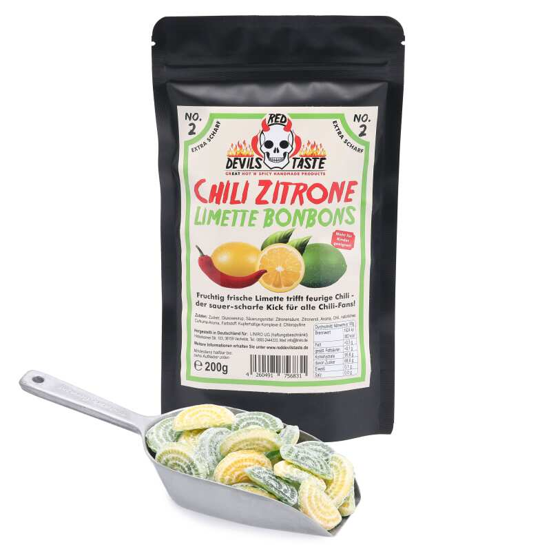
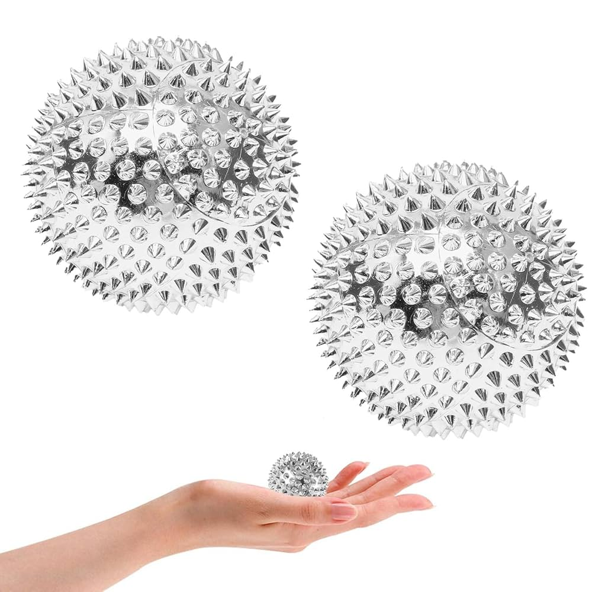
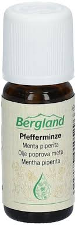
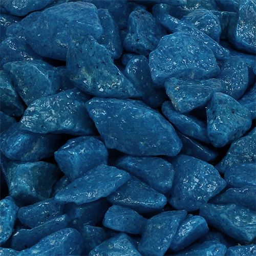
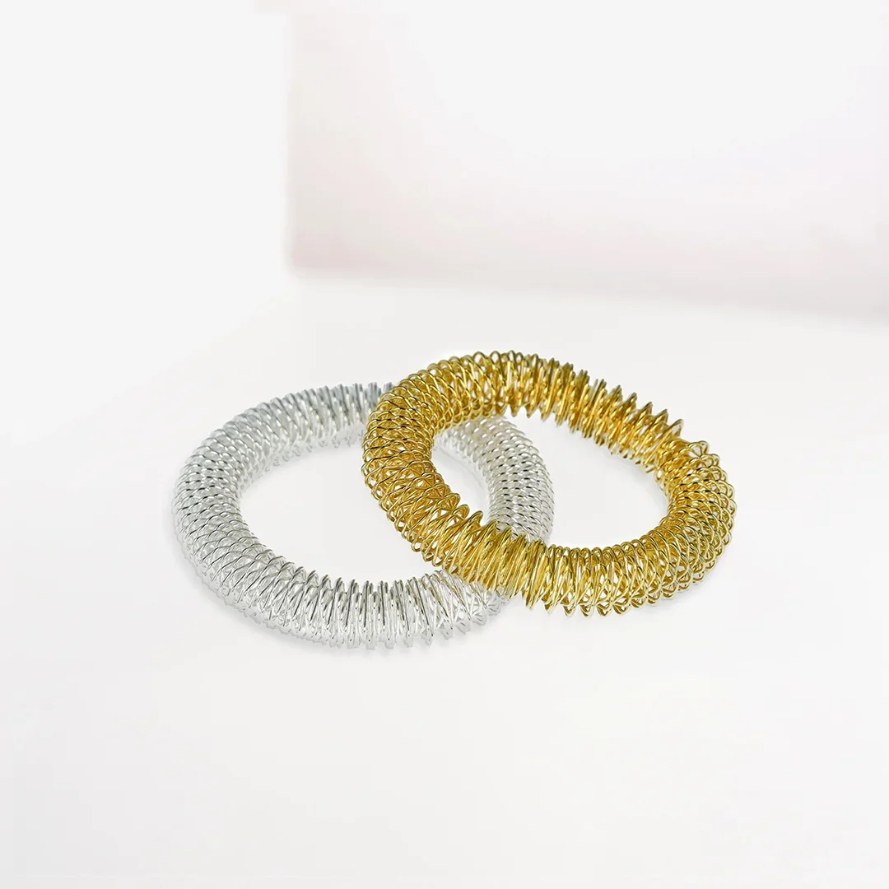
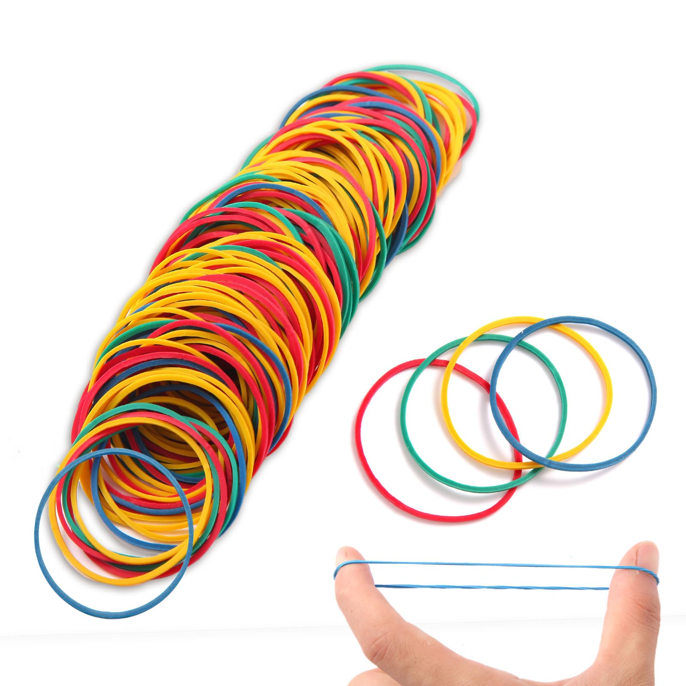
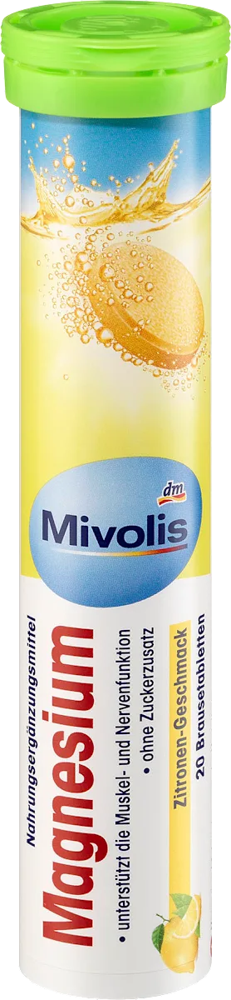
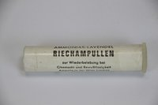

Wow, der erste Impuls ist richtig krass. Wirklich heftig. Das Scharfe ist ähnlich wie beim Ammoniak und nimmt jegliche Wahrnehmung auf sich. Ich muss aktiv daran denken, dass Ich dieses Bonbon gerade im Mund habe und irgendwie bewegen, damit es nicht an einem Ort bleibt und die "Ansammlung von Schärfe" nicht zu stark wird. Extrem gut. \n Website

Trifft perfekt den feinen Grad zwischen angenehm und etwas zu stark / schmerzend. Durch dieses Pieken geht die Aufmerksamkeit sofort auf den Ball bzw. in die Finger und Handflächen. Zugegeben macht es auch etwas Spaß die Abdrücke auf den Handflächen zu sehen. Auch an den Unterarmen mit dem etwas bedachteren Rollen ein etwas schmerzender Reiz. Aber auch hier ist es wieder so, dass es mich anregt, die Hände zu bewegen, zu massieren, zu kneten. Und die Aufmerksamkeit von der Gedankenspirale zurück zu meinem Körper zu holen.
Zieht gut durch, etwas unangenehm. Gibt Anstöße, dass Ich z.B. noch Zähne putzen muss. Gerade am Abend. Erinnert mich auch an die Erfahrung mit dem erwähnten Duschgel. Einfach ein starker Reiz. Ich würde sagen, dass olfaktorische Reize bei mir einfach sehr effektiv sind, um die Aufmerksamkeit zu lenken.

Das Rumlaufen dabei ist Gewöhnungssache. Der manuelle Aufwand ist quasi wieder hoch. Der Fakt, dass Ich mir Schuhe anziehen muss, um die Steine zu spüren ist wieder ein Hindernis. Wobei der Reiz wirklich unangenehm und einnehmend ist. Selbst mit den Socken ist der Stein klar spürbar, Ich denke, das beste Ergebnis ließe sich mit 2-3 kleinen Steinen erzielen. Es besetzt echt viel Kapazität in meiner Wahrnehmung, und lässt nichts anderes in diesen Platz.

Etwas zwigespalten, da Ich wenn Ich das Armband an einem Arm habe Ich das auch auf dem anderen Arm brauche. Ich muss auch etwas weit zurück am Arm um den Reiz zu spüren. Aber dann ist es ein angenehmer, ständiger Reiz. Also so... 30% des Arms runter sind stellen, an denen Ich wie einen elektrischen Impuls durch den Körper ziehen spüre. Das ist angenehm und erinnert mich immer wieder daran, dass Ich den Arm bewegen kann. Auch der leichte Schemerz ist ein wirkender Impuls. Hat was von Massage aber auch von etwas intensiverem, hinterlässt auch Eindrücke in der Haut, die dann optisch auch irgendwie wirken.

Der manuelle Aufwand ist recht hoch. Und es will immer von alleine mehr Richtung Hanfgelenk zurückwandern. Wenn Ich das Band an der richtigen Stelle weiter oben am Arm (ähnliche 30% wie mit dem Ring) zurückschnalzen lasse, wirkt es in Ordnung, der Reiz ist da, wie so ein kleiner Sprung. Aber das immer wieder manuelle zurückziehen und schnalzen lassen ist in dem Moment zu viel Aufwand?

Ich weiß nicht ob es daran lag, dass die Brausteablette mit Geschmack kam, aber Ich empfand das ganze als sehr angenehm. Es ist etwas schwer die Tablette unter der Zunge zu behalten, da es eine ganze Zeit braucht, bis sie sich aufgelöst hat. Der Geschmack ist angenehm, es prickelt etwas auf der Zunge und im Mundraum. Das Schäumen ist spürbar, aber Ich weiß nicht ob Ich einfach zu viel schlucke, oder mein Mund zu groß ist oder was, aber Ich habe das Gefühl, dass der Reiz nicht so stark ist, wie Ich es mir erhofft hatte. Es ist angenehm, Ich habe das Gefühl, dass es nicht so stark ist, dass es mich komplett einnimmt.

Logischerweise aus dem Ranking rausgenommen, Ich weiß einfach, dass die Dinger sehr effektiv sind. Wirken schnell, komplette mentale Funktionen werden sofort von dem intensiven Geruch eingenommen. Wie besprochen, allerletzte Lösung.